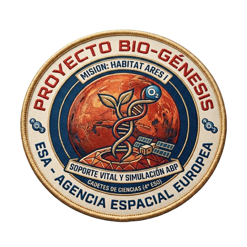
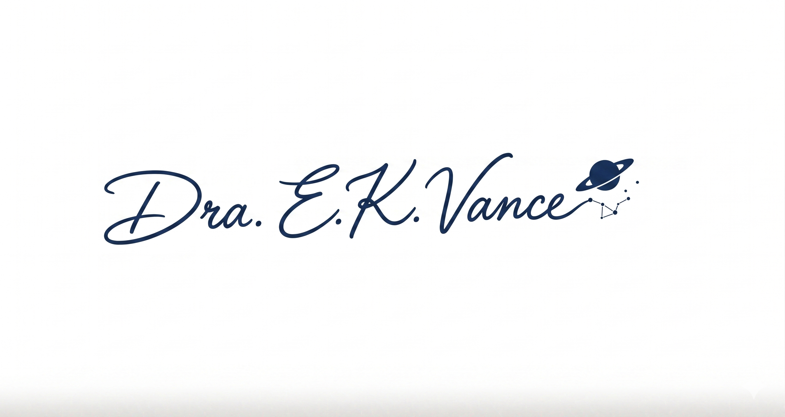

AGENCIA ESPACIAL EUROPEA (ESA)
Dirección de Exploración Humana y Robótica

ASUNTO: CONVOCATORIA URGENTE - PROYECTO BIO-GÉNESIS
Estimados Cadetes de Ciencias (4º ESO):
La colonización de Marte ya no es ciencia ficción, es un problema de termodinámica, cinética química y estequiometría. Nuestra primera avanzadilla robótica ha establecido los cimientos del "Hábitat Ares I" en el cráter Jezero, pero enfrentamos un reto crítico: el soporte vital.
La atmósfera exterior es un 95% de CO2 a una presión media de 600 Pa. Letal. Necesitamos mentes jóvenes y no contaminadas por la ingeniería tradicional para resolver esto.
OBJETIVO DE LA MISIÓN:
Diseñar el sistema completo de presurización y oxigenación del hábitat. Deberán aplicar las Leyes de los Gases y calcular las reacciones químicas necesarias para generar O2 a partir del suelo marciano, presentando un modelo viable (Pitch / Prototipo) al comité de inversores en 5 Soles (sesiones).
El fracaso no es una opción. Su primer deber es rellenar el Test de Aptitud (ver imagen adjunta) para que la computadora central analice sus perfiles y asigne roles en la tripulación.
Firmado,

Dra. E. K. Vance
Directora de Operaciones Extraplanetarias
Metodología: El Motor de Curvatura
// ACCESO AL DISEÑO INSTRUCCIONAL: AUTORIZADO // MÓDULO FINAL FLIPPED CLASSROOM
ESQUEMA ADDIE (Flipped Mastery)
-
A
Análisis: Test diagnóstico previo ("Test de Aptitud Espacial") vía Google Forms. Creación de grupos heterogéneos según competencias y perfiles DUA.
-
D
Diseño: Integración de Just-in-Time Teaching (JiTT). Selección de Saberes Básicos (Termodinámica/Gases) empaquetados en un Menú DUA para consumo pre-clase.
-
D
Desarrollo: Curación y creación de vídeos interactivos (EdPuzzle), podcasts científicos, simuladores PhET y rúbricas.
-
I
Implementación: 4 Sesiones presenciales. Aula 100% activa usando Peer Instruction (Instrucción entre pares) y Gamificación.
-
E
Evaluación: Formativa (Cuestionarios JiTT, ConceptTests en clase) y Sumativa (Pitch Final con Rúbrica compartida).
Matriz DUA Aplicada
Red Afectiva (Implicación)
El Porqué del aprendizaje: La narrativa gamificada (Soporte Vital en Marte) aporta relevancia auténtica. Los alumnos eligen su rol en la tripulación y cómo presentar el producto final (Pitch).
Red de Reconocimiento (Representación)
El Qué del aprendizaje: El contenido Flipped (Espacio Individual) no es un único vídeo. Se ofrece un Menú Multimodal: Vídeo subtitulado (EdPuzzle), Podcast narrativo con transcripción, o texto/infografía interactiva.
Red Estratégica (Acción y Expresión)
El Cómo del aprendizaje: Múltiples formas de demostrar competencia en el "Pitch Final": vídeo pregrabado, maqueta 3D comentada, presentación oral en directo o póster científico interactivo.
Cronograma de Operaciones
// PROTOCOLO FLIPPED CLASSROOM ACTIVADO // FASE GRUPAL
Espacio Individual (Pre-Clase)
Just-in-Time TeachingLos alumnos se enfrentan al material en casa mediante un enfoque de instrucción directa asíncrona pero altamente guiada.
- Vídeo en EdPuzzle sobre las Leyes de Boyle, Charles y Gay-Lussac.
- Podcast "Diario de a bordo: Respirar en Marte" (con PDF de transcripción).
- Infografía interactiva Genially.
Cuestionario JiTT: Antes de la clase presencial, deben responder 3 preguntas breves vía Google Forms. El docente revisa las respuestas 1 hora antes de la clase para adaptar la sesión (abordar concepciones erróneas comunes).
Sesión 1: Briefing & Peer Instruction
Eric Mazur MethodTransformación radical del espacio grupal. No hay clase magistral, hay resolución de conflictos cognitivos detectados en el JiTT.
- Minutos 0-15: Resolución de dudas masivas detectadas en el cuestionario previo.
- Minutos 15-45 (Peer Instruction): El docente lanza ConceptTests (preguntas trampa de opción múltiple) en pantalla (Plickers o Mentimeter).
- Fase 1: Votación individual silenciosa.
- Fase 2: Si el acierto es entre 30% y 70%, se exige discusión con el compañero de al lado para convencerle de su respuesta.
- Fase 3: Revotación (el porcentaje de acierto se dispara gracias a la instrucción entre pares).
- Minutos 45-55: Formación de las tripulaciones (grupos base) e inicio de diseño.
Sesión 2: Simulador PhET (Descubrimiento)
Aprendizaje InductivoLas tripulaciones usan simuladores interactivos (PhET Interactive Simulations) en sus dispositivos.
El Reto: Determinar experimentalmente (virtual) cuántos moles de una mezcla gaseosa O2/N2 necesitan inyectar en el volumen de su hábitat para alcanzar la presión óptima a la temperatura media marciana (-60ºC).
El docente actúa estrictamente como facilitador ("Guía al lado", no "Sabio en la tarima"), resolviendo bloqueos solo cuando el grupo entero no puede avanzar, promoviendo el andamiaje.
Sesión 3: El Evento Inesperado
Gamificación / ABPEn medio del cálculo estequiométrico para los generadores de oxígeno, se introduce un elemento de dinámica de juego (urgencia y sorpresa).
(Haz clic en el botón superior derecho para ver la mecánica que se aplica en el aula)
¡ALERTA CRÍTICA: TORMENTA DE POLVO GLOBAL!
Los paneles solares están cubiertos. La temperatura del hábitat caerá a -100ºC en 40 minutos. La presión interna colapsará según la Ley de Gay-Lussac.
MISIÓN ABREVIADA: Recalcular el nuevo volumen necesario o añadir calefactores de isótopos antes de que acabe la clase. Si suena el timbre y no hay cálculos, la colonia se pierde.
Justificación didáctica: Se aplica la presión de tiempo (mecánica de juego) para fomentar el trabajo colaborativo bajo estrés simulado, consolidando la aplicación práctica de la teoría en un contexto narrativo (Aprendizaje Basado en Problemas).
Sesión 4: El "Pitch" a la ESA
Evaluación Formativa/SumativaCulminación del proyecto grupal. Presentación de los diseños de soporte vital.
Herramientas de Evaluación
- Rúbrica compartida en Classroom desde el Sol 1.
- Coevaluación entre pares (evalúan el Pitch de otros equipos).
- Diana de autoevaluación grupal (¿Cómo trabajamos?).
Nota del Docente:
Se evalúa el proceso deductivo y el cálculo matemático de las leyes, no solo el formato final. El Flipped Learning ha permitido dedicar el 100% del tiempo de estas 4 sesiones a crear, aplicar y evaluar (niveles superiores de la taxonomía de Bloom).
FIN DE LA TRANSMISIÓN